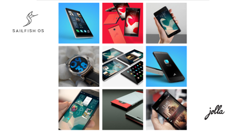

Why I support Jolla and you should too.
Duopoly (noun), a situation in which two suppliers dominate the market for a commodity or service.
That is the status quo. The world most of us live in. Visa or Mastercard. Pepsi or Coca Cola. Your mobile operating system. Duopolies strangle innovation, control prices, push potential alternatives out of the market by making it impossible to compete.
While Jolla might not be here to solve your choice between Pepsi or Coca Cola, they are here to provide an alternative, independent mobile operating system, called Sailfish OS.
While it's always great to provide an alternative, Jolla isn't just here to challenge the status quo. Jolla is a mobile company that has four firm values: Love, Transparency, Passion, Respect. It was evident when I had the opportunity to visit their office in Tampere, Finland. They're not just hollow words, they're instilled in every "Sailor".
They're not just providing a compelling alternative, they're doing it for the right reasons.
Sailfish OS provides a unique mobile experience, built around natural gestures, effortless multitasking, and customizable through their ambiance system. It's not built to be a means of locking you into an ecosystem or enabling the collection of your private information. You're the master of your device. You're in control of your data. You're changing the status quo.
That's why I support Jolla. And why you should too.
Sailor Feed
Below are kind remarks from around the world by the community. Get yours added by tweeting with the hashtag #ISupportJolla.